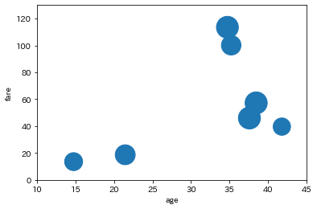

Seabornもmatplotlibと同じように、データの可視化をするライブラリです。
中でmatplotlibを使っていますが、よりきれいに表示することができます。より実践的です。
これまでに比べると量が少ないと思います。
GoogleColabやJupyter Labといった環境下では、最初から入っているため改めて入れる必要はありません。
自分で入れる場合はconda install seabornやpip install seabornという記述をします。
Seabornをimportする際、snsとするのが一般的です。
import seaborn as sns
import numpy as np
import pandas as pd
import matplotlib.pyplot as plt
!pip install japanize-matplotlib
import japanize_matplotlib
matplotlibでも学習したヒストグラムです。最頻出です。
df = sns.load_dataset('titanic')
df.head(3)
| survived | pclass | sex | age | |
|---|---|---|---|---|
| 0 | 0 | 3 | male | 22.0 |
| 1 | 1 | 1 | female | 38.0 |
| 2 | 1 | 3 | female | 26.0 |
ヒストグラムを作るには sns.histplot() 関数を使います。
今回は、pclassカラムのデータをヒストグラム化します。
sns.histplot(df, x="pclass")
引数elementをstepと指定すると、棒グラフの境が消えます。
sns.histplot(df, x="pclass", element='step')
引数hueに「分割したい列名」を指定すると、
項目ごとにグラフ化することができます。
年齢別の生存者の割合について確認しましょう。
sns.histplot(df, x="pclass", hue='survived')
引数multipleをstackと指定することで、「積み上げグラフ」を作成できます。
sns.histplot(df, x="pclass", hue='survived', multiple='stack')

引数multipleをfillと指定することで、「100%積み上げグラフ」を作成できます。
sns.histplot(df, x="pclass", hue='survived', multiple='fill')
客室等級が低いほど志望者の割合が多くなることが分かります。
2変量のヒストグラムを取得したい場合は、sns.displot() 関数を使います。
今回はageカラムとfareカラムのデータを作成します。
df = sns.load_dataset('titanic')
df.head(3)
| survived | pclass | sex | age | fare | |
|---|---|---|---|---|---|
| 0 | 0 | 3 | male | 22.0 | 7.2500 |
| 1 | 1 | 1 | female | 38.0 | 71.2833 |
| 2 | 1 | 3 | female | 26.0 | 7.9250 |
df = df.dropna(subset=["age"]) # 今回は欠損値の行をdrop
sns.displot(df, x="age", y="fare", alpha=1)
引数hueに「分割したい列名」を指定すると、
項目ごとにグラフ化することができます。
sns.displot(df, x="age" , y="fare", alpha=1, hue='survived')

高いチケットを持っている客は比較的生き残ったこと、
高齢の客は比較的亡くなった方が多いこと、などが分かります。
2変数の分布を見ることができます。
散布図とヒストグラムの両方を可視化できるのが特徴です。
df = sns.load_dataset('titanic')
df.head(3)
| survived | pclass | sex | age | fare | |
|---|---|---|---|---|---|
| 0 | 0 | 3 | male | 22.0 | 7.2500 |
| 1 | 1 | 1 | female | 38.0 | 71.2833 |
| 2 | 1 | 3 | female | 26.0 | 7.9250 |
sns.jointplot(data=df, x="age", y="fare", alpha=0.5)
引数hueに「分割したい列名」を指定すると、
項目ごとにグラフ化することができます。
sns.jointplot(data=df, x="age", y="fare", alpha=0.5, hue='survived')
引数 kind で reg と指定すると、2変数の大まかな関係を線で引くことができます。
（カーネル密度推定）
sns.jointplot(data=df, x="age", y="fare", kind='reg')
引数kindを hex と指定すると、散布図を六角形のヒートマップ形式で表示します。
sns.jointplot(data=df, x="age", y="fare", kind='hex')
データの重なり具合がより分かりやすくなったと思います。
Seabornの中で再頻出の関数です。
DataFrame内にある全ての数値項目のペアのplotを表示できます。
df = sns.load_dataset('titanic')
sns.pairplot(df[['age', 'fare', 'pclass', 'survived']]) # 不要なカラムは除く
同じカラムが交差するところは、そのカラムのヒストグラムが表示されます。
pairplotでは引数 hue を使ってデータの色分けをすることが多いです。
カテゴリごとにマーカーの色を変えることができます。
sns.pairplot(df[['age', 'fare', 'pclass', 'survived']], hue='survived', plot_kws={'alpha':0.5})
カテゴリーの値が入ったカラムに対してのplotを Categorical Plot といいます。
いくつか用意されています。
データの数を単純にカテゴリ別に比べます。
sibsp（兄弟・配偶者）カラムとparch（親・子）カラムを足して
partnerカラムを作っていきます。
df = sns.load_dataset('titanic')
df.head(3)
| survived | pclass | sex | age | sibsp | parch | alone | |
|---|---|---|---|---|---|---|---|
| 0 | 0 | 3 | male | 22.0 | 1 | 0 | False |
| 1 | 1 | 1 | female | 38.0 | 1 | 0 | False |
| 2 | 1 | 3 | female | 26.0 | 0 | 0 | True |
df["partner"] = df["sibsp"] + df["parch"]
人数によって生存者がどうなっているのかを確認してみましょう。
sns.countplot('partner', data=df, hue='survived')
家族連れの人の方が生存者の割合が高いことが分かります。
家族の人数ごとではなく、家族がいたかどうかで
割合の違いを見てみましょう。
mapping = {True:"alone", False:"with family"}
df["alone"] = df["alone"].map(mapping)
df["alone"]
0 with family
1 with family
2 alone
3 with family
4 alone
...
886 alone
887 alone
888 with family
889 alone
890 alone
Name: alone, Length: 891, dtype: object
sns.countplot('alone', data=df, hue='survived')
具体的な割合を見てみましょう。
df.groupby("alone").mean()
| survived | pclass | age | sibsp | parch | fare | adult_male | partner | |
|---|---|---|---|---|---|---|---|---|
| alone | ||||||||
| alone | 0.303538 | 2.400372 | 32.220297 | 0.000000 | 0.000000 | 21.242689 | 0.763501 | 0.000000 |
| with family | 0.505650 | 2.169492 | 26.413452 | 1.316384 | 0.960452 | 48.832275 | 0.358757 | 2.276836 |
生存率は一人の方が約30%、家族連れの方が約50%であることが分かります。
カテゴリーごとに分けて、指定したカラムの平均値を比較する棒グラフを作ることができます。
df = sns.load_dataset('titanic')
df["partner"] = df["sibsp"] + df["parch"]
df["survived"] *= 100 # %表示
家族の数ごとの生存率を確認するグラフを書いてみましょう。
sns.barplot(x='partner', y='survived', data=df)
黒い線はエラーバーと呼ばれるもので、不確かさを示すものです。
こちらではエラーバーについていろいろな話があります。
平均値以外の値を比較したい場合は、引数 estimator を使います。
Numpyの関数で指定します。
＜例＞ チケットクラスごとの年齢の平均値と中央値を表示する
# 平均値の比較
sns.barplot(x='pclass', y='age', data=df)
df.groupby("pclass").mean()["age"]
pclass
1 38.233441
2 29.877630
3 25.140620
Name: age, dtype: float64
# 中央値の比較
sns.barplot(x='pclass', y='age', data=df, estimator=np.median)
df.groupby("pclass").median()["age"]
pclass
1 37.0
2 29.0
3 24.0
Name: age, dtype: float64
matplotlibでも学習した箱ひげ図と同じですが、
Seabornの方が使い勝手の良さと綺麗さからよく好まれるようです。
df = sns.load_dataset('titanic')
sns.boxplot(x="pclass" , y="age", data=df)
引数hueに「分割したい列名」を指定すると、
さらに分割することができます。
sns.boxplot(x="pclass" , y="age", data=df, hue="survived")

データの分布に応じて箱の形を変えることができます。
平均にデータが集まることが多いために、バイオリンのような形になります。
df = sns.load_dataset('titanic')
sns.violinplot(x='pclass', y='age', data=df)
sns.violinplot(x='pclass', y='age', data=df, hue="survived")
統計量の比較だけを把握したい場合はboxplotを、
全体の分布の様子を把握したい場合はviolinplotを使うようにしましょう。
引数splitをTrueに、引数innerをquartにすることで、見やすいグラフが完成します。
sns.violinplot(x='pclass', y='age', data=df, split=True , inner="quart")
violinplotでは表示しているのは密度であるため、実際の乗客数を比較することができません。
そこで使うのがswarmplotです。実際の分布をみることができます。
df = sns.load_dataset('titanic')
sns.swarmplot(x='pclass', y='age', data=df)
1stクラスは他のクラスに比べて年配の方が多そうです。
プロットが潰れているところがあるので、
プロットの全体のサイズを変えましょう。
sns.swarmplot(x='pclass', y='age', data=df, size=4)
引数hueを指定することもできます。
sns.swarmplot(x='pclass', y='age', data=df, size=4, hue='survived')
3rdクラスの方（等級が低い方）の死亡者の割合の高さが分かります。
swarmplotでは統計量は出てきません。
boxplotやviolinplotと、特性を考えながら合わせて使うようにしましょう。
表の各値の大きさに応じて色付けした図をヒートマップといいます。
一目で値の大きさが分かります。また、データの傾向を見ることができます。
ヒートマップは、データサイエンスでは大変よく使われる図です。
・相関表：各カラム間の相関を示すもの（こちらが参考になります）
・混同行列：分類器の分類を表にしたもの（こちらが参考になります）
今回は実際に相関表を作り、ヒートマップを見ていきましょう。
df = sns.load_dataset('titanic')
df.corr() # 相関表の作成
| survived | pclass | age | sibsp | parch | fare | adult_male | alone | |
|---|---|---|---|---|---|---|---|---|
| survived | 1.000000 | -0.338481 | -0.077221 | -0.035322 | 0.081629 | 0.257307 | -0.557080 | -0.203367 |
| pclass | -0.338481 | 1.000000 | -0.369226 | 0.083081 | 0.018443 | -0.549500 | 0.094035 | 0.135207 |
| age | -0.077221 | -0.369226 | 1.000000 | -0.308247 | -0.189119 | 0.096067 | 0.280328 | 0.198270 |
| sibsp | -0.035322 | 0.083081 | -0.308247 | 1.000000 | 0.414838 | 0.159651 | -0.253586 | -0.584471 |
| parch | 0.081629 | 0.018443 | -0.189119 | 0.414838 | 1.000000 | 0.216225 | -0.349943 | -0.583398 |
| fare | 0.257307 | -0.549500 | 0.096067 | 0.159651 | 0.216225 | 1.000000 | -0.182024 | -0.271832 |
| adult_male | -0.557080 | 0.094035 | 0.280328 | -0.253586 | -0.349943 | -0.182024 | 1.000000 | 0.404744 |
| alone | -0.203367 | 0.135207 | 0.198270 | -0.584471 | -0.583398 | -0.271832 | 0.404744 | 1.000000 |
あとは sns.heatmap() の中にこの相関表を入れるだけです。
sns.heatmap(df.corr())

引数 annot をTrueに指定すると、各マスに数値を入れてくれます。原則つけるようにしましょう。
また、引数 cmap にカラーマップを指定すると色のグラデ―ジョンを指定できます。
coolwarmやhot、plasmaなどが有名です。
sns.heatmap(df.corr(), cmap='coolwarm', annot=True)

matplotlibでも同じような話がありました。
Seabornはそもそもデフォルトできれいなグラフが描けるので、
仕様頻度はそこまで高くないかもしれません。
sns.set() のパラメータを加えることで、グラフを装飾できます。
引数contextは paper、notebook、talk、poster の4つの値を取ります。
df = sns.load_dataset('titanic')
df = df.dropna(subset=['age']) # 欠損値のあるレコードはdrop
sns.set(context="notebook")
# sns.set_context("notebook") でも同意
sns.histplot(df["age"])

プレゼンなどを想定し、文字を大きくしたい場合はposterを使うことが多いです。
そうでない場合はデフォルトであるnotebookで問題ないようです。
sns.set(context="poster")
# sns.set_context("poster") でも同意
sns.histplot(df["age"])
引数styleは darkgrid、whitegrid、dark、white、ticks の5つの値を取ります。
sns.set(context="notebook" , style="darkgrid")
sns.histplot(df["age"])
デフォルトはdarkgridですが、好みのものを使うようにしましょう。
ticksを指定した場合はplotに軸と枠ができますが、
sns.despine() を使うと軸を消すことができます。
sns.set(context="notebook" , style="ticks")
sns.histplot(df["age"])
sns.despine()
引数には top、right、left、bottom をbool型の値で指定できます。
指定するとそれぞれを表示を切り替えることができます。
デフォルトはtop、rightがTrueになっています。
色のパレットを指定することができます。
先ほど引数cmapに指定していたものになります。
sns.set(palette='coolwarm')
sns.violinplot(x='pclass', y='age', data=df)
sns.set()内で指定したpaletteは、hueの色にしか適用されません。少し見にくいと思います。
violinplot自体の色を変えたいときは、violinplot内で引数paletteを指定しましょう。
sns.set(palette='coolwarm')
sns.violinplot(x='pclass', y='age', data=df, palette="bright")
# 興味のある方は「hsv」,「twilight」などに変更してみてください
Seabornは中でmatplotlibを含んでいるので、
同じようにタイトルや軸の名前を指定することができます。
同様にして、plt.savefig() で保存も可能です。
df = sns.load_dataset('titanic')
sns.set(palette='coolwarm')
sns.violinplot(x='pclass', y='age', data=df)

plt.savefig("seaborn_sample.png")